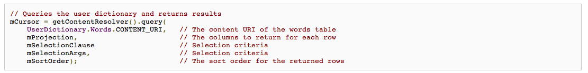
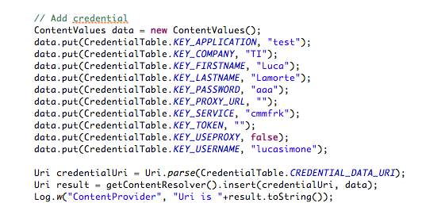
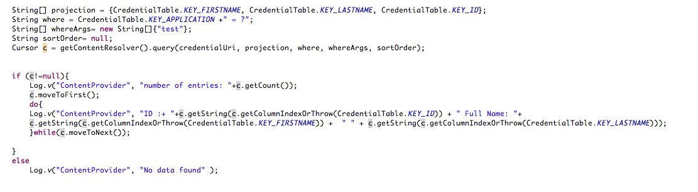
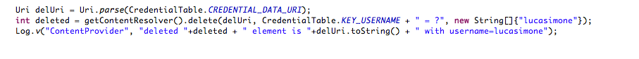

How to Use an Android Content Provider¶
- Content providers manage access to a structured set of data.
- They encapsulate the data, and provide mechanisms for defining data security.
- Content providers are the standard interface that connects data in one process with code running in another process
How¶
You use the ContentResolver object in your application's Context
to communicate with the provider as a client.
The
ContentResolver object communicates with the provider object, an
instance of a class that implements ContentProvider.
The
provider object receives data requests from clients, performs the
requested action, and returns the results.
The
ContentResolver methods provide the basic "CRUD" (create,
retrieve, update, and delete) functions of persistent storage.
For example to get a list of the words and their locales from the
User Dictionary Provider, you call ContentResolver.query().
The
query() method calls the ContentProvider.query() method defined
by the User Dictionary Provider.
The following lines of code show a ContentResolver.query() call:

A Content URIs is a URI that identifies data in a provider.
Content
URIs include the symbolic name of the entire provider (its
authority) and a name that points to a table (a path).
When
you call a client method to access a table in a provider, the
content URI for the table is one of the arguments.
When¶
You don't need to develop your own provider if you don't intend
to share your data with other applications.
However, you
do need your own provider to provide custom search suggestions in
your own application.
You also need your own provider if
you want to copy and paste complex data or files from your
application to other applications.
Android Societies Content Provider (beta)¶
This content provider is the beta version to store common data like credential, service, etc.
The Authority for Societies content provider is defined in GITHUB
and it is org.societies.android.platform.contentprovider
All the information of this content provider are stored into a
MySQL DB into different TABLES.
Each tables is defined as
structure and URIs inside ICoreInterface under org.societies.api.android.internal.tables
package. There are currently those tables:
- CredentialTable
- CssNodeTable
- CssNodesTable
- CssProfileTable
- ServiceTable
The tables are created during the onCreate method
and here is the code:
[[https://redmine.ict-societies.eu/attachments/131/Schermata_04-2456023_alle_10.19.27.png]]
{kind=link}
The reference to the Table definition is in GitHUB at this level
[[https://github.com/societies/SOCIETIES-Platform/blob/development/platform-infrastructure/client-frwk/CoreInterfaces/src/main/java/org/societies/api/android/internal/tables]]
Insert Example¶
To add some data inside the Content Provider and so into the Table of the Societied DB you need
- the URI composed by the AUTHORITY of the Content Provider + Table Name
- ContentValue object that is a map with the data to be stored into the table
here a simple example on how to add a Credential MAP into the CP.

Query Example¶
As described into the first example to Query some data into the Content Provider the following data are required:- Projection: a view of the table to query
- URI of the content provider + Table to query
- Where clause + Args
here another example available also in the code:

Delete Example¶
To delete something in the Content Provider and so in the DB you need
- Content URI to access the right Content Provider (Authority) and Table ( + "/TABLEBAME")
- A string that contains the where condition to select the dataset to delete. This should contains ? char to add variables
- An array that contains the variables, in the order to be put inside the WHERE string
here an example to better understand...
